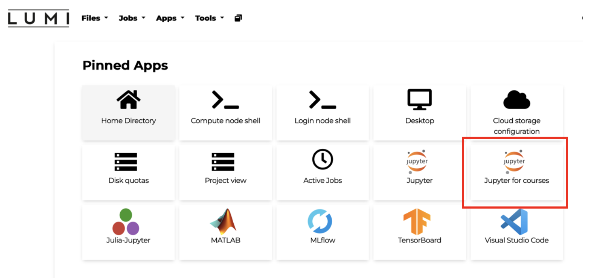
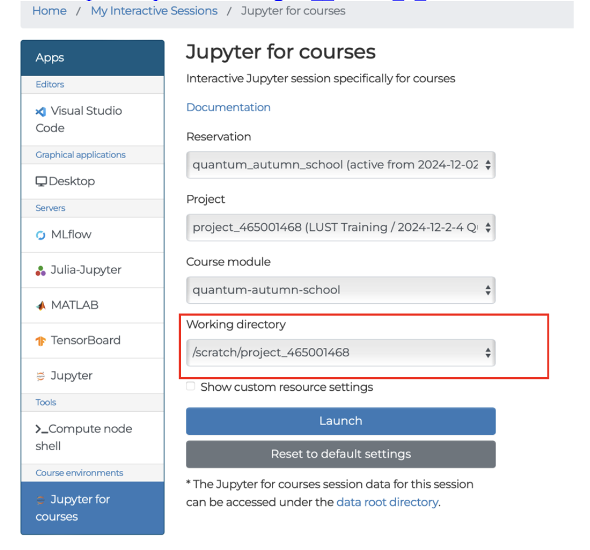
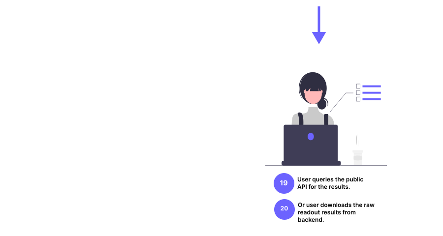
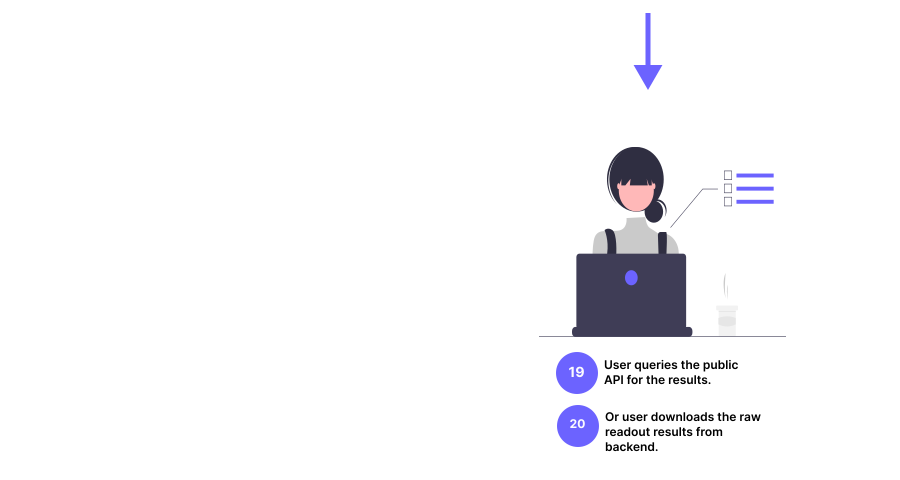

Quantum Autumn School 2024
Recent developments in quantum technology are bringing the world closer to a new technological revolution – the advent of usable quantum computers able to provide enormous acceleration to important computational tasks. In coming years, quantum computing is expected to have a significant impact on many areas of research that can utilise computational modelling. Indeed, significant efforts and investments are currently underway in Europe to bolster skills and capacity within quantum computing.
ENCCS joins forces again this year with NordIQuEst, to deliver a three-day quantum autumn school in early December 2024! The school will also be visited by and contributed to by several companies who are developing in-house expertise in various application domains of quantum computing.
NordΙQuEst brings together a consortium of seven partners from five Nordic and Baltic countries to connect world leading traditional HPC resources and quantum computers across national borders with the aim to establish a quantum computing platform customised to the needs of the region.
The quantum autumn school will be held in Stockholm in hybrid form, in-person and online.
Prerequisites
For the hands-on tutorials, basic familiarity with Python and some experience working in a Unix environment are desirable. Some previous experience with quantum computing is expected.
Setup
Participants can run the course notebooks either on the Helmi quantum computer through the LUMI Open OnDemand platform, or locally on their laptops. Please refer to step by step instructions below to get started!
Using Helmi via the Custom Quantum Course Environment on LUMI Open OnDemand
A course environment has been made with preloaded modules (qiskit-iqm) and resource settings for connecting to Helmi. This section offers guidance on accessing this environment.
Log in to LUMI Open OnDemand / web interface with your MyCSC / Haka account
Click on “Jupyter for Courses”

You should get a prefilled page shown below, you can change a few variables such as your “working directory”.
Please note what you selected as your working directory when launching your Jupyter Notebook as this will determine where your file is saved.
You can find more information about storage on LUMI here: https://docs.lumi-supercomputer.eu/storage/#__tabbed_1_1

You also have the flexibility to adjust some resource settings. By clicking “show custom resource settings”(Please note that memory should be kept under 3GB and the partition should always be
q_fiqci).

Once you are ready, click on Lunch.

Depending on the queue, it might take a few minutes before you can access your session. Once your session is ready, you should see a page like this:

Click on the big blue “Connect to Jupyter” button and it will launch a Jupyter notebook on a separate tab. Navigate to the new tab.
Now you can create and run codes on a jupyter notebook. A sample is shown in the image below.

You can save your notebooks like this:
go to the top left corner, click on file
click on
Save notebookto save a specific file orSave allto save all file & changes
This environment gives each user 2 hours and 2GB per session. It is configured to load the helmi_qiskit (qiskit-iqm) module and use the q_fiqci partition to connect to Helmi.
Useful Links
https://fiqci.fi/_posts/2024-08-23-Lumi_web_introduction
https://docs.csc.fi/computing/quantum-computing/helmi/running-on-helmi/
Locally with your laptop
All of the course contents can be followed along locally on your laptop. Each tutorial will provide installation instructions.
If you already have a preferred way to manage Python versions and libraries, you can stick to that. If not, we recommend that you install Python3 and all libraries using miniconda a free minimal installer for the package, dependency and environment manager for conda.
Please follow the installation instructions on https://docs.conda.io/en/latest/miniconda.html to install Miniconda3.
Make sure that both Python and conda are correctly installed:
$ python --version
$ # should give something like Python 3.11.7
$ conda --version
$ # should give something like conda 24.9.2
A requirements.txt file is provided which contains all of the python packages to install a local software environment on your computer. Using this a conda environment can be created using the command:
$ conda create --name qas2024 -y python=3.11.7 pip
Which creates a new conda environment with Python 3.10 and pip. You can then activate it and install the python packages:
$ conda activate qas2024
$ pip install -r requirements.txt
You can download the requirements.txt here.
Tergite overview
Contents
What is Tergite?
Let’s take a walk down memory lane to the time when classical computers were large expensive machines that could only be afforded by large corporations. Back then, batch processing enabled multiple users in a given company to share a single computer.
An operator working on an old mainframe
Quantum computing is at a similar stage today. Quantum computers are large expensive machines that can only be operated by a select few. There is need for specialized software to give multiple users simplified access to a single quantum computer.
Tergite is one such collection of software that enables a quantum computer experimentalist to:
Submit experiments to the quantum computer’s queue.
Retrieve results of completed experiments
Monitor the device parameters of the quantum computer
Just like in the batch processing of old, the quantum computer requires an operator.
Through Tergite, an operator of a quantum computer can do the following:
(Re)calibrate the quantum computer
Turn on/off the quantum computer
Manage experimentalists’ access to the quantum computer
Why is Tergite necessary?
1. Operation of a quantum computer requires a highly specialized skillset.
Most quantum computers of today are very complex machines that require specialized care in a lab environment. The skillset required to operate such machines takes many years of postgraduate studies to master.
Tergite gives experimentalists, who don’t have this skill, access to the quantum computer to run experiments on it.
2. Quantum computers need frequent recalibration
One characteristic of today’s quantum computers is the fact that their device parameters drift with time. Temperature changes, cosmic radiation, aging of electronics, mechanincal vibrations etc. cause the device parameters of the quantum computers to change with time.
Tergite autocalibration is library used to recalibrate quantum computers. It is part of the Tergite stack.
3. Idle time on a quantum computer is very expensive.
A typical quantum computer today costs more than half a million euros (€500,000). Every second a quantum computer lies under-utilized, a lot of money is being thrown down the drain. Batching experiments from multiple experimentalists is an attempt to make sure the quantum computer is in use at all times.
What can I do with Tergite?
1. Access the WACQT quantum computer
The Wallenberg Center for Quantum Computing (WACQT) is a Swedish national research programme with a focus on quantum technology. One of its major goals is to create a quantum computer that is accessible to Swedish researchers and WACQT industrial partners. The WACQT quantum computer is physically housed at Chalmers University of Technology and is operated by Chalmers Next Labs AB.

The WACQT quantum computer laboratory
In order to access this quantum computer via the internet, one has to go through the Tergite stack running at QAL 9000.
Interacting with the WACQT quantum computer requires the use of the Tergite software development kit (SDK).
2. Calibrate superconducting qubit chips
If one has a superconducting quantum chip with a design similar to the WACQT quantum computer chip, it is possible to calibrate this chip using the Tergite autocalibration library. Doing this requires substantial hardware and software know-how.
Chalmers Next Labs AB currently offers a service to calibrate such chips for Swedish Small and Medium Enterprises (SMEs).
3. Expose a physical quantum computer to the internet
The entire Tergite stack can be run in front of a physical quantum computer to expose it to a select group of experimentalists. It contains Identity Access Management (IAM) to handle authorization of only members of a given organization. Any organization can use Tergite to spin up a cloud offering for their quantum computers. The Tergite stack is open source and free to use or extend under the Apache 2.0 License.
However, there are a few requirements for Tergite to work well:
The quantum chip should be a superconducting with a similar design to the WACQT quantum computer chip designas described by Kosen et al. in the “Signal Crosstalk in a Flip-Chip Quantum Processor” article.
The quantum computer should be controlled by Qblox instruments
How does Tergite work?

Data flows in Tergite
Components of the stack
Tergite is composed of four main components:
Backend
The operating system of the quantum computer. Its basic functions include:
Transpiling OpenPulse job definitions to Quantify Schedules that can be understood by the Qblox control instruments.
Queuing jobs so that the quantum chip can receive one job at a time.
Saving the device parameters of the quantum chip, after (re)calibration.
Frontend
The public interface through which users on the internet interact with the quantum computer. It consists of:
RESTful API : The programmatic interface through which scripts and other computer programs interact with the quantum computer
Dashboard : The web-based graphical interface through which users interact with the quantum computer
Software Development Kit (SDK)
The Library which eases writing of python scripts and programs that interact with the quantum computer. It is based on Qiskit and communicates with the backend using OpenPulse sent via HTTP/HTTPS
Automatic Calibration Tool
The Command Line Interface (CLI) used to determine the device parameters of the quantum computer.
Basic Flow


 

Test out Tergite
It is possible to test out a live instance of Tergite by using the QAL 9000 quantum computer. However, someone from WACQT must have given you permission to use it because it is not open to the general public.
It is also possible to run Tergite on your own computer. The only catch is that you will only be able to run your experiments on simulators. Instructions on how to run Tergite locally are found in the Tergite quick start tutorial.
Who is the course for?
About the course
See also
Credits
The lesson file structure and browsing layout is inspired by and derived from work by CodeRefinery licensed under the MIT license. We have copied and adapted most of their license text.
Instructional Material
This instructional material is made available under the Creative Commons Attribution license (CC-BY-4.0). The following is a human-readable summary of (and not a substitute for) the full legal text of the CC-BY-4.0 license. You are free to:
share - copy and redistribute the material in any medium or format
adapt - remix, transform, and build upon the material for any purpose, even commercially.
The licensor cannot revoke these freedoms as long as you follow these license terms:
Attribution - You must give appropriate credit (mentioning that your work is derived from work that is Copyright (c) ENCCS and individual contributors and, where practical, linking to https://enccs.github.io/sphinx-lesson-template), provide a link to the license, and indicate if changes were made. You may do so in any reasonable manner, but not in any way that suggests the licensor endorses you or your use.
No additional restrictions - You may not apply legal terms or technological measures that legally restrict others from doing anything the license permits.
With the understanding that:
You do not have to comply with the license for elements of the material in the public domain or where your use is permitted by an applicable exception or limitation.
No warranties are given. The license may not give you all of the permissions necessary for your intended use. For example, other rights such as publicity, privacy, or moral rights may limit how you use the material.
Software
Except where otherwise noted, the example programs and other software provided with this repository are made available under the OSI-approved MIT license.